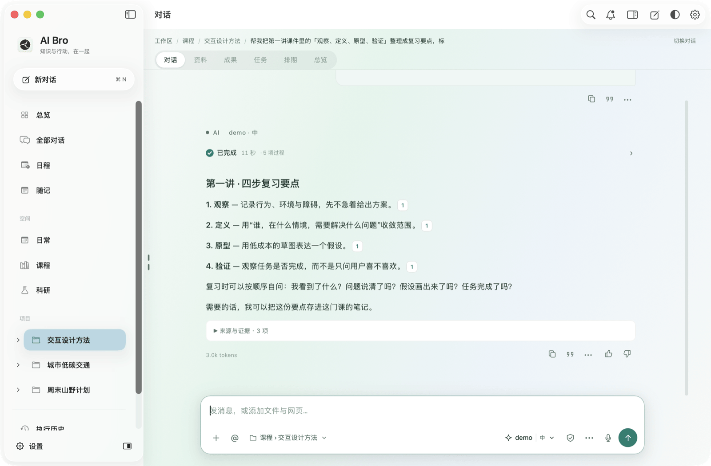

边读边聊
回答在左，原件在右。核对一句，不用切换窗口。
真实 App 界面 · 虚构资料 · 演示回答为预设
消息从输入框升入对话，新文字逐段淡入，思考段在模型思考时自动展开。
检索、读取原件、模型思考按顺序排开，检索到的资料以胶囊显示。
在 PDF 里选中文字，可解释、翻译、批注或问 AI，并附文档名与页码。
按钮、分段控件和浮层改用 macOS 胶囊与玻璃材质，过渡统一。
瞬时失败自动重试，格式错误交回模型修正，未收到结果的工具标为「结果未知」。
01 · ASK
发出问题后，AI 先检索项目里的资料，再读取原件。每一步都写在时间线上：查了什么、读了哪一页、何时完成。
02 · CITE
回答里的编号对应本轮实际读取的来源。点开就能看到文件名、页码和原文摘录，再一键打开 PDF 核对。
03 · SELECT
对话和 PDF 并排打开。选中原文，浮出解释、翻译、批注和问 AI；问 AI 会把这句话连同文档名与页码放进输入框。
04 · EVERYDAY
回答在左，原件在右。核对一句，不用切换窗口。
“明天下午三点，安排二十分钟校园观察。”保存前可以审阅。
跟随系统外观切换。玻璃浮层和胶囊控件在深色下保持层次。
资料、对话和笔记保存在本机。连接兼容 API 或本机 Codex CLI 通道；使用远程模型时，所需内容会发送给你选择的服务。
THE FILM

短片制作中。先看看上面的真实录屏。
真实 App 界面 · 虚构资料 · 演示回答为预设 · 短片经剪辑
0.9.5 预览版面向 Apple Silicon Mac，要求 macOS 14 或以上，安装包包含 Python 与 PDF 运行时。当前为 ad-hoc 签名，尚未经过 Apple 公证；首次打开请按发布页说明操作。本版不包含新的移动端安装包。
是。截图和录屏来自 AI Bro 0.9.5，在独立的演示工作区中使用虚构的课件和项目。演示中的模型回答由本地脚本预设，界面、工具步骤、引用和 PDF 阅读器均为真实功能，不代表模型的实际速度或回答质量。
需要。AI Bro 连接兼容的模型 API，或本机官方 Codex CLI 通道；模型订阅与额度需自行准备。凭据保存在本机，不随工作区同步。
可以。AI Bro 以 AGPL-3.0 开源，提供源码构建与自托管同步说明。同步是个人设备间的推送和拉取，当前不提供端到端加密。 阅读指南 ↗